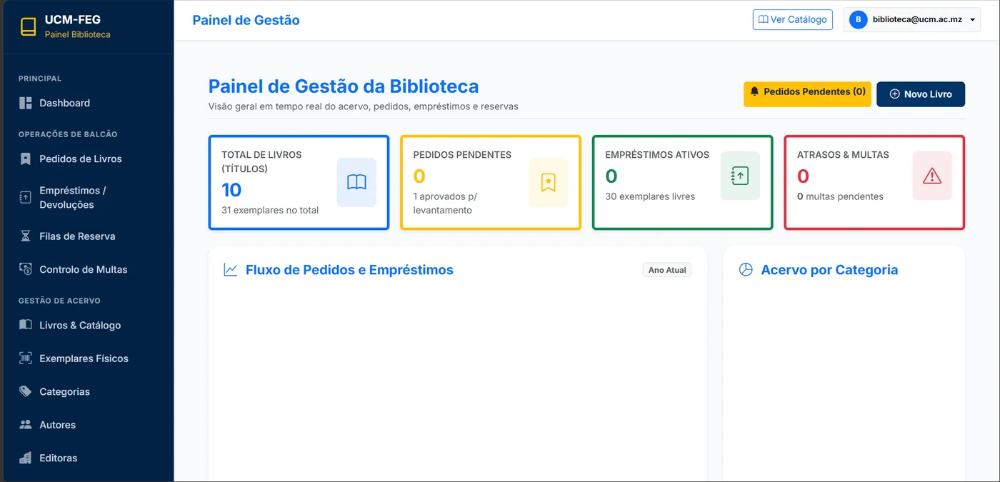
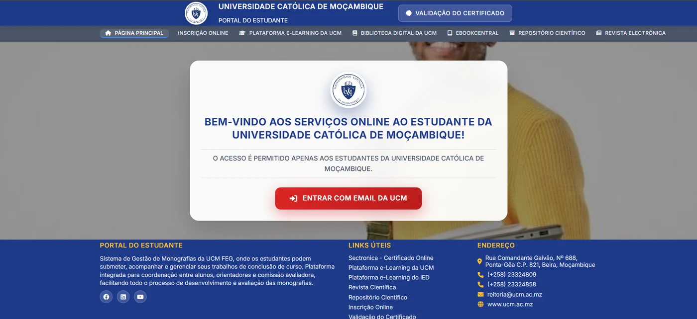
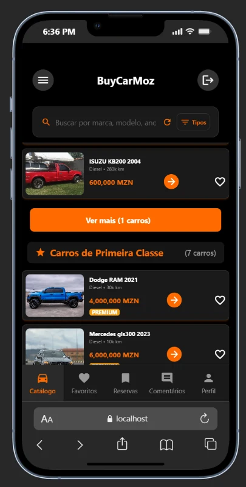

Olá, sou João Valeriano Júnior.
Transformo ideias em soluções digitais.
Sou finalista de Tecnologias de Informação na Universidade Católica de Moçambique e dedico-me ao desenvolvimento de soluções tecnológicas, à criação de websites e à construção de experiências digitais funcionais e modernas.
const desenvolvedor = {
nome: "João Valeriano Júnior",
idade: 21,
local: "Beira, Moçambique",
curso: "Tecnologias de Informação",
instituicao: "UCM-FEG",
foco: ["Web Dev", "Sistemas", "Redes"]
};Sobre mim
Conheça o meu percurso e a minha paixão pela tecnologia.
João Valeriano Júnior
Estudante Finalista de TI
Sou João Valeriano Júnior, tenho 21 anos e sou finalista do curso de Tecnologias de Informação na Universidade Católica de Moçambique, Faculdade de Economia e Gestão (FEG), na Beira. Tenho interesse pelo desenvolvimento de software, desenvolvimento web, redes de computadores e administração de sistemas.
Gosto de aprender novas tecnologias, resolver problemas e transformar ideias em soluções digitais úteis. O meu objectivo é continuar a desenvolver as minhas competências e aplicar os meus conhecimentos em projectos que criem valor para pessoas e organizações.
Formação Académica
TI na UCM-FEG (Beira)
Foco Profissional
Desenvolvimento web & sistemas
Abordagem
Aprendizagem contínua e foco prático
Competências Técnicas
Tecnologias e ferramentas que utilizo no desenvolvimento de projectos.
Desenvolvimento Web
Criação de interfaces modernas, responsivas e intuitivas.
- HTML5
- CSS3
- JavaScript
- Design Responsivo
- Manutenção de Websites
Programação e Desenvolvimento
Construção de lógicas de programação e aplicações orientadas a objectos.
- Java
- PHP
- Python
- Programação Orientada a Objectos
- Desenvolvimento de Aplicações
Redes e Sistemas
Infraestrutura, suporte e configuração de ambientes tecnológicos.
- Redes de Computadores
- Diagnóstico de Problemas
- Administração de Sistemas
- Configuração de Ambientes
Ferramentas e Tecnologias
Ambientes de desenvolvimento e gestão de dados.
- Visual Studio Code
- Git e GitHub (Em atualização)
- MySQL
- XAMPP
- Spring Boot (Conforme projectos)
Serviços Profissionais
Soluções tecnológicas desenhadas para impulsionar o seu negócio ou projecto.
Criação de Websites
Websites institucionais, páginas pessoais, landing pages e sites para pequenos negócios.
- Design moderno e responsivo
- Otimização para telemóveis
- Estrutura optimizada
Sistemas Web
Soluções web personalizadas para organizar informações e apoiar processos empresariais.
- Gestão de dados estruturada
- Interfaces funcionais
- Suporte a processos internos
Portfólios e Páginas Profissionais
Páginas para estudantes, profissionais, empreendedores e marcas pessoais.
- Destaque de competências
- Apresentação de projectos
- Contacto directo integrado
Manutenção e Melhoria
Correcção de problemas visuais, ajustes de layout e melhoria da experiência do utilizador.
- Revisão de código e design
- Correção de erros visuais
- Atualização de conteúdos
Suporte Informático
Apoio técnico básico, instalação de programas, configuração de ambientes de trabalho e diagnóstico.
- Configuração de estações
- Instalação de software
- Diagnóstico de avarias
Redes e Configuração
Apoio em tarefas básicas de configuração e diagnóstico de redes e sistemas informáticos.
- Configuração básica de redes
- Resolução de falhas de ligação
- Organização de sistemas
Projectos Recentes
Trabalhos académicos e práticos desenvolvidos durante a minha formação.

Sistema de Empréstimo de Livros
Sistema desenvolvido para gestão de empréstimos, livros e leitores numa biblioteca universitária.

Sistema de Arquivo Digital de Monografias
Plataforma para armazenamento, consulta e gestão de monografias e trabalhos de fim de curso para UCM-FEG.

Aplicação de Apresentação de Veículos
Interface web moderna para exposição de conceitos automóveis e catálogos de veículos personalizados.
Como Trabalho
Um processo estruturado para garantir resultados claros e de qualidade.
Conversa Inicial
Compreensão profunda das necessidades, objetivos e requisitos do projeto.
Planeamento
Definição da estrutura, tecnologias e arquitetura ideal para a solução.
Desenvolvimento
Codificação, testes rigorosos de funcionamento e ajustes de design.
Entrega e Suporte
Demonstração final, entrega do projeto e ajustes acordados.
Testemunhos
Avaliações de clientes e parceiros.
Esta secção será actualizada em breve com avaliações e testemunhos de clientes satisfeitos.
Vamos transformar a tua ideia num projecto digital?
Entre em contacto para oportunidades, dúvidas ou pedidos de serviços.
Informações de Contacto
Estou disponível para novos desafios, parcerias e projetos tecnológicos. Envie uma mensagem diretamente ou através dos canais abaixo.
-
E-mail valtermangasse@gmail.com
-
WhatsApp / Telemóvel +258 85 072 4566 / 83 471 7824
-
Localização Beira, Moçambique